Seminari sobre xarxes socials i museus al Picasso de Màlaga: 40 tweets que hauria d’haver escrit
Fri, 25 Nov 2011 13:28:18 +0000
El Museu Picasso vam ser convidats a presentar la nostra experiència 2.0 en el seminari Xarxes Socials i Museus: Reputació i credibilitat a la xarxa, organitzat els passats 17 i 18 de novembre pel Museo Picasso Málaga i la UNIA. Enllaçant experts en comunicació, museus, periodisme i màrqueting, les jornades no qüestionaven si els museus [...]
El Museu Picasso vam ser convidats a presentar la nostra experiència 2.0 en el seminari Xarxes Socials i Museus: Reputació i credibilitat a la xarxa, organitzat els passats 17 i 18 de novembre pel Museo Picasso Málaga i la UNIA. Enllaçant experts en comunicació, museus, periodisme i màrqueting, les jornades no qüestionaven si els museus hem de tenir o no una presència 2.0, sinó com. Afins amb l’àmbit a explorar, es van retransmetre per streaming i van tenir una forta activitat per Twitter.
No sóc una usuària activa a Twitter, sinó que més aviat em limito a seguir els tweets a posteriori. Al tornar a Barcelona he vist el cabal d’informació i d’intercanvis que s’han generat al voltant del seminari, i he sentit que m’estava perdent alguna cosa: que hi ha hagut una conversa i un intercanvi d’opinions en què no he pogut participar. I això és el que, tant a nivell professional com personal, ens pot passar si no fem l’esforç d’incorporar les xarxes socials en la nostra quotidianitat.
Així que vaig a fer un petit assaig twitero: escriure a posteriori els tweets que hauria d’haver escrit a Màlaga. Allà van, els 40 que hauria/podria haver escrit.
Museu Picasso de Màlaga, 17 de novembre
Presentació
Pepe Lebrero director @mPICASSOm, presenta #RRSSmuseos i parla d’experiències pioneres: Antoni Abad el MACBA, 90s. Jo també vaig ser-hi!
Javier Celaya, “La cultura en els núvols”
@javiercelaya a #RRSSmuseos: museus tenen poca participació dels seus seguidors. Potser no plantegen les seves propostes clarament?
@javiercelaya a #RRSSmuseos: transformació de recerca individual a sistemes de recomanació, relacionen opinions de consumidors afins
@javiercelaya usuaris som ingenus! Drets d’usuaris en núvol: dades s’usen per a fins comercials. No il·legal, però poc ètic #RRSSmuseos
no perdre la “chuleta” de xarxes socials de @javiercelaya / dosdoce en http://bit.ly/9ETBvB la presenta a #RRSSmuseos + estudi museus 2.0 http://bit.ly/u9i2me
Antonio Rodríguez de les Heras, “La Cultura en un món en xarxa”
Què està succeint? @ARdelasH compara 2.0 amb operació urbanística: creació de fòrums, demolició estructures antigues #RRSSmuseos
Les persones no estan a la xarxa, ho són. Identitat és fonamental en les xarxes, diu @ARdelasH a #RRSSmuseos
@ARdelasH situació de pols permanent entre ocasió de totalitarisme/emergència de l’individu #RRSSmuseos
Recomanacions @ARdelasH a #RRSSmuseos: dosificar info, repetir per contrarestar fugacitat, desplegar la narrativa @mPICASSOm
Pere Farias, “Credibilitat de la informació cultural en els mitjans”
Crisi en premsa: gratuïtat de la info + dependència publicitària + reducció / banalització = pèrdua de credibilitat @FariasBatlle #RRSSmuseos
Internet, 2ª font d’informació després de televisió @FariasBatlle #RRSSmuseos
Segons públic, les notícies de cultura són les que tenen major credibilitat @FariasBatlle #RRSSmuseos
Museu Picasso de Màlaga, 18 de novembre
Pilar Gonzalo, “Cultura i conversa s’escriuen amb hashtag”
@pilargonzalo comença a #RRSSmuseos amb “les conferències estan obsoletes” i em rendeixo als seus peus: cal revisar formats!
Tu pots liderar una revolució – amb els altres #museosentwitter @pilargonzalo #RRSSmuseos
@pilargonzalo planteja: programes o dialogues? Museus han de confiar en comunitat d’usuaris #RRSSmuseos @mPICASSOm
Anna Guarro, “Museu Picasso 2.0. El procés d’un canvi”
Copio els tweets d’altres sobre la meva presentació. Moltes gràcies per fer ressò de les meves paraules i pels vostres comentaris!
RT @AlexMarCasado: ULL al community! La comunicació organitzacional és una funció directiva: la ONLINE TAMBÉ @museupicasso @mPICASSOm #RRSSmuseos Genial
RT @Cultopia_es: Reptes de @museupicasso: major interactivitat, comunicació multicanal i multiplataforma, i major integració en línia/in situ #RRSSmuseos
RT @AlexMarCasado: “Compartir, no publicitar” Aquesta és la clau. GRÀCIES a Anna Guarro @museupicasso @mPICASSOm #RRSSmuseos
RT @aracorbo: Molt interessant @museupicasso en #RRSSmuseos http://t.co/URSP7cvE. Tenen aplicació de mòbil del museu. Algun museu més a Espanya?
Fietta Jarque, “Oblida la tecnologia, es tracta de persones”
Fietta Jarque ens parla de museus davant el repte de compartir sense banalitzar #RRSSmuseos @mPICASSOm
Fietta Jarque: cita Montibello, museus volen atraure masses per a un producte que no és de fàcil comprensió #RRSSmuseos
Pregunta de Fietta Jarque: els museus han d’actuar com a institucions o com a individus a les xarxes? @mPICASSOm #RRSSmuseos
Neus Arqués, “Gestió de la reputació en línia dels museus”
Gestió de la reputació: què no diu la web que hauria? Què diu que no hauria? Neus Arqués a #RRSSmuseos
Neus Arqués: l’important és l’estratègia de posicionament! Cal crear continguts aptes per a cercadors. Indexar, indexar, indexar #RRSSmuseos
I en cas de crisi? Neus Arqués recomana: prevenir creant comunitat, escoltar, reaccionar. Ni precipitació ni immobilitat #RRSSmuseos
Maria Elvira San Millán, “Xarxa social de coneixement”
Més que mesura quantitativa, mesurament qualitativa @maesmf en @mPICASSOm #RRSSmuseos
Llibre blanc de apps, http://bit.ly/uObUy3 recomanat per @maesmf a #RRSSmuseos
Fantàstica experiència del públic: cas del Cementiri Anglès de Màlaga, com salvar patrimoni amb FB i Twitter @cementerioing #RRSSmuseos
Paul Capriotti, “La comunicació dialògica dels museus de Catalunya a Internet”
@paulcapriottipregunta: Per què van els públics als museus? Per divertir-se aprenent #RRSSmuseos
Els museus no estan aprofitant les eines: hi ha més ús però no hi ha canvi de mentalitat @paulcapriotti #RRSSmuseos
@paulcapriotti a punt de publicar estudi “La comunicació en els museus de Catalunya”, 2009-2011 #RRSSmuseos
enquestes, en museus catalans, de mitjana, els grans treballen més en 1.0, els mitjans i petits en 2.0 @paulcapriotti #RRSSmuseos
Soledad Gómez Vilchez, “Jocs socials en museus”
Malauradament no vaig poder quedar a la seva presentació, que després ella ha tingut la gentilesa de penjar al seu bloc http://bit.ly/szmECM i hi ha un àudio a http://t.co/0SQ1Ha9j
Recorro al recurs de copiar els tweets d’altres, però començo amb un meu (ho sento però algú ho havia de dir!)
Ara que tots hem après a fer powerpoints, el que es porta és el Prezi! @mediamusea en #RRSSmuseos
@mariblancarg: Els jocs són elements lúdics amb els q els museus s’acosten de manera diferent als seus públics, diu @mediamusea a #RRSSmuseos
@AnaMoralesR Remembering  : “Els propis usuaris i visitants de museus es converteixen en grans promotors de l’activitat dels museus” #RRSSmuseos
: “Els propis usuaris i visitants de museus es converteixen en grans promotors de l’activitat dels museus” #RRSSmuseos
#RRSSmuseos cal crear jocs que acostin l’usuari a la institució @mediamusea
#RRSSmuseos el museu ha de tenir en compte la diferència de dispositius a l’hora de plantejar els seus jocs @mediamusea
Unes jornades magnífiques! Moltes gràcies al Museo Picasso Málaga i la UNIA per l’impecable organització i l’hospitalitat, ha estat un plaer compartir experiències amb vosaltres i amb els altres ponents.
Anna Guarro
Programes Públics
Misteris sense resoldre al Museu Picasso
Tue, 15 Nov 2011 17:18:24 +0000
Aquest cap de semana hem iniciat la segona edició de “El misteriós cas del Picasso”, una gimcana familiar amb molt de misteri per les sales del museu.
El Mateu es posa a investigar (Joan Forns, de la Cia. La Paparra). Foto: Jordi Mota
I hem començat amb molt bon peu. Aquest és el comentari d’una de les [...]
Aquest cap de semana hem iniciat la segona edició de “El misteriós cas del Picasso”, una gimcana familiar amb molt de misteri per les sales del museu.
El Mateu es posa a investigar (Joan Forns, de la Cia. La Paparra). Foto: Jordi Mota
I hem començat amb molt bon peu. Aquest és el comentari d’una de les mares assistents d’aquest cap de setmana:
“Diumenge vàrem anar i va ser fantàstic!!! Molt interessant i molt ben enfocada per a la quitxalla. La M. de 9 anys i la L. de 7 van disfrutar un munt, i com a mare he de dir, que a part de disfrutar… van aprendre… Si us plau, no canvieu, continueu així!!! Moltes gràcies”
La veritat és que estem molt satisfets de poder presentar de nou aquesta proposta que van desenvolupar la primavera passada els responsables de la companyia de teatre La Paparra a partir de la nostra petició:
- Una activitat tipus gimcana
- Que es desenvolupés en el marc de la col·lecció permanent
- Orientada a infants de 5 a 13 anys aproximadament, però que involucrés a tota la família
- Participativa
- Lúdica i a l’hora educativa
Elements clau de l’èxit d’aquesta activitat han estat per una banda la capacitat interpretativa dels membres de La Paparra, que generen una gran implicació dels participants i, per l’altra, el personatge, que és creïble, però alhora se situa clarament en un marc de fantasia i d’emoció.
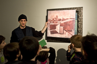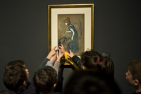
Investigadors en acció. Fotos: Jordi Mota
L’activitat s’inicia amb la trobada del grup de nens i pares amb el Mateu, que vol obtenir una feina al museu. I, per fer-ho, ha de resoldre una sèrie d’enigmes… però tot sol no se’n surt, i demana l’ajuda als visitants.
La gimcana ens porta per una selecció d’obres i de sales. En cada obra sorgeix una pregunta/enigma i, a mida que ens la van explicant, el mateix contingut de l’obra ens aporta la resposta/pista que, un cop resoltes totes les preguntes, ens dóna la solució de l’enigma. Tots els nens reben un carnet d’investigadors per la seva ajuda.
La meva filla, unes setmanes després de venir a la visita que va fer a la tardor, em va preguntar, tota seriosa: “Mare, i al Mateu, com li va, a la feina nova? Que ho fa bé?”
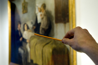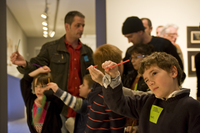
Resolent el misteriós cas del Picasso. Fotos: Jordi Mota
Novetats en aquesta edició? Cap ni una  ! A part, és clar, de l’adaptació de la proposta als canvis de la col·lecció permanent, que tot i ser permanent sempre és diferent, amb obres que es retiren per ser restaurades o per exposicions i d’altres que estan a les reserves i que així poden ser mostrades…
! A part, és clar, de l’adaptació de la proposta als canvis de la col·lecció permanent, que tot i ser permanent sempre és diferent, amb obres que es retiren per ser restaurades o per exposicions i d’altres que estan a les reserves i que així poden ser mostrades…
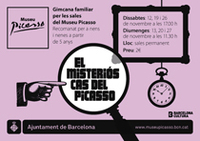
Si ets dels que no deixes la lupa ni per anar a dormir… aquesta activitat és per a tu!
Anna Guarro
Programes Públics
Enrique Vila-Matas, convidat al Club de Lectura
Mon, 07 Nov 2011 16:50:07 +0000
Enrique Vila-Matas ha estat el gran protagonista de la segona sessió del Club de Lectura d’aquest curs. Amb l’exposició “Devorar París. Picasso 1900-1907” com a horitzó, vam parlar amb ell sobre la seva novel·la o llibre autobiogràfic París no se acaba nunca. Com ell mateix ens va indicar, “Yo recibí la herencia barcelonesa de Picasso [...]
Enrique Vila-Matas ha estat el gran protagonista de la segona sessió del Club de Lectura d’aquest curs. Amb l’exposició “Devorar París. Picasso 1900-1907” com a horitzó, vam parlar amb ell sobre la seva novel·la o llibre autobiogràfic París no se acaba nunca. Com ell mateix ens va indicar, “Yo recibí la herencia barcelonesa de Picasso y de Miró de mirar culturalmente a París”.
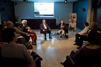
Sessió del Club de Lectura
De les festes a casa de la Paloma Picasso a la pobresa del jove escriptor de Barcelona que vol viure la seva experiència francesa, de la comunitat argentina (Raúl Escari, Edgardo Cozarisnky) als referents internacionals (Ernest Hemingway, Margarite Duras), de la necessitat del viatge i la fugida a la recerca de l’estil i del món creatiu propis, Vila-Matas va recórrer els temes i els personatges del seu llibre, tot buscant noves perspectives, noves dades sobre els mesos en què va viure a París i sobre la coherència secreta de la seva obra. “Trabajé en el libro basándome en la estructura de mi memoria”, va dir l’autor, en referència a l’estructura d’aquest treball.

Assistents al Club de Lectura
Una sessió memorable: els habituals del club i una munió de lectors vila-matians van batre el rècord d’assistència, amb més de cent lectors de literatura i art.
El primer dijous de desembre ens reunirem per comentar Parla’ls de batalles, de reis i d’elefants, de Mathias Enard.
Jordi Carrión
www.jorgecarrion.com
Big Draw. La Festa del Dibuix en imatges!
Mon, 24 Oct 2011 16:43:49 +0000
Gràcies a tots els artistes, talleristes, monitors, equips dels centres i a tots els participants, petits i grans, als qui heu dibuixat i als qui ho heu mirat. Tornarem l’any vinent!!!
Aquí us mostrem una petita selecció de fotos de la jornada!
Muralla multicolor amb Zosen al Convent de Sant Agustí. Foto: Bárbara Piffre
Un nas, uns [...]
Gràcies a tots els artistes, talleristes, monitors, equips dels centres i a tots els participants, petits i grans, als qui heu dibuixat i als qui ho heu mirat. Tornarem l’any vinent!!!
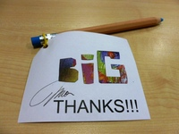
Aquí us mostrem una petita selecció de fotos de la jornada!
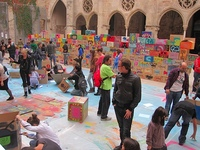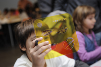
Muralla multicolor amb Zosen al Convent de Sant Agustí. Foto: Bárbara Piffre
Un nas, uns ulls, una boca… amb Emiliana Desing Studio al Centre de Coneixment i Recerca del Museu Picasso. Foto: Jordi Mota
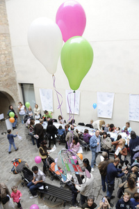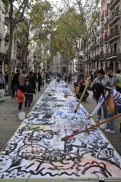
Fer volar coloms… al Pati Finestres del Museu Picasso. Foto: Jordi Mota
Escombrar per pintar? amb el Rafa Castañer-APIC al passeig del Born. Foto: Núria Fradera
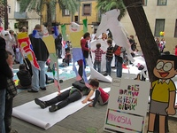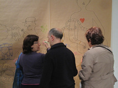
Nikosia i les siluetes errants al carrer Allada Vermell. Foto: Bárbara Piffre
Cadàvers exquisits amb el Perico Pastor al Museu Picasso. Foto: Bárbara Piffre
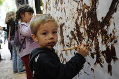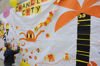
Quin dibuix més bo! Dibuixar amb xocolata amb el Gremi de Pastisseria de Barcelona al Museu de la Xocolata. Foto: Jordi Mota
Operació habitants amb Ilu·Station al Pati Noguera del Museu Picasso. Foto: Jordi Mota
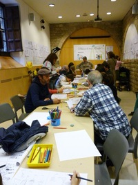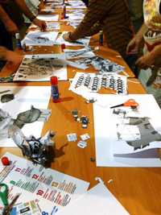
La meva família en el futur amb la Meritxell Duran al Disseny Hub Barcelona. Foto: Conxa Rodà
Taller de creació de personatges de contes amb Tantàgora a la Biblioteca Francesa Bonnemaison. Foto: Conxa Rodà
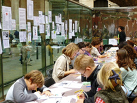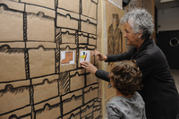
Una notícia = un dibuix amb l’Anna Parini, la Carmen Segovia i la Rosario Velasco al Palau de la Música. Foto: Conxa Rodà
Amb una sabata i una espardenya… amb la Roser Capdevila al Museu Picasso. Foto: Jordi Mota
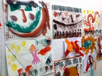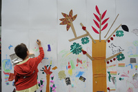
Atrapa l’empremta amb Àfrica Fanlo al Centre Sant Pere Apòstol. Foto: Conxa Rodà
Dibuixem un arbre amb la Rosa Llop i l’Àgata Vega a la Plaça Jaume Sabartés. Foto: Jordi Mota
Si heu fet fotos, podeu compartir-les al nostre grup de Flickr
Torna el Club de Lectura amb Fernande Olivier com a protagonista
Mon, 17 Oct 2011 16:46:55 +0000
Dijous passat va començar la segona temporada del Club de Lectura del museu. Si bé l’any passat vaig assistir-hi com a membre del club, en aquesta ocasió em van demanar fer una intervenció entorn del llibre de la Fernande Olivier, Recuerdos íntimos. Escritos para Picasso.
Estar a “l’altra banda” no és fàcil, però en aquest cas [...]
Dijous passat va començar la segona temporada del Club de Lectura del museu. Si bé l’any passat vaig assistir-hi com a membre del club, en aquesta ocasió em van demanar fer una intervenció entorn del llibre de la Fernande Olivier, Recuerdos íntimos. Escritos para Picasso.
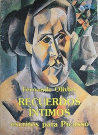
Estar a “l’altra banda” no és fàcil, però en aquest cas ha estat tot un plaer. Tenim la sort de comptar amb un grup participatiu, amb inquietuds, i amb ganes de parlar d’art i literatura entre amics.
Parlar de Picasso a través de l’obra de Fernande Olivier ofereix la possibilitat de veure l’artista des d’una perspectiva més humana. Però a més d’allò personal, Olivier ens fa el retrat d’una època fonamental i ens dóna algunes claus per a apropar-nos a l’obra i al mètode de treball de Picasso. És per això que, excepcionalment, la sessió es va iniciar a les sales de l’exposició temporal “Devorar París. Picasso 1900-1907”, davant de dues de les obres que l’autora menciona al seu relat.
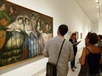
Inici de la sessió a les sales de l’exposició temporal
Recuerdos íntimos. Escritos para Picasso, així com l’obra de molts altres, són fonts bàsiques en la quotidianitat de la nostra feina, les llegim i rellegim, i sempre trobem noves dades que ens ajuden a conèixer, a explicar i a estimar Picasso.
Isabel Cendoya
Exposicions
La lectura de Recuerdos íntimos. Escritos para Picasso, de Fernande Olivier, va ser la introducció perfecta al la nova temporada del Club de Lectura, en el marc de l’exposició “Devorar París. Picasso 1900-1907”. Per què? Perquè Fernande Olivier va ser una de les protagonistes d’aquells primers anys del pintor a la capital francesa, quan la bohèmia, la pobresa i l’experimentació s’entrellaçaven en la vida quotidiana del creador.
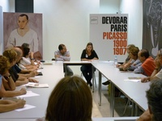
Primera sessió de la temporada amb Isabel Cendoya i Jordi Carrión
Olivier escriu sense floritures retòriques. Ens explica la seva vida condemnada per la bellesa: nena desitjada pels homes, raptada, casada a contracor, maltractada pel seu marit. Finalment, escapa a París, on es dedica professionalment a modelar per a artistes. El seu relat és el d’una figura importantíssima en la història de l’art: la model, que habitualment no explica el seu punt de vista perquè no té veu. Va estimar a un Picasso que encara no era el famós Picasso. I el seu document, com ens va recordar la Isabel Cendoya, és d’un gran valor testimonial i humà.
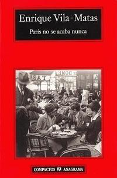
La propera sessió estarà dedicada a París no se acaba nunca, d’Enrique Vila-Matas, amb la presència de l’escriptor.
Jordi Carrión
 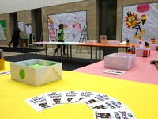
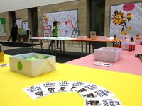